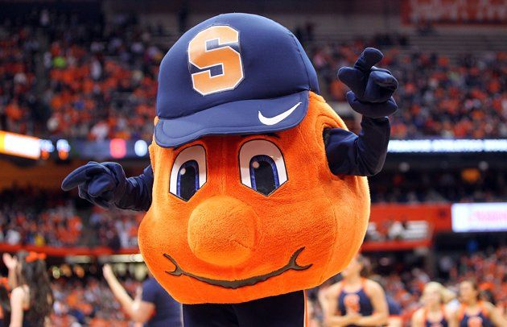

Education
DePaul University - College of Computing and Digital Media
MS in Human Computer Interaction
March 2016 - June 2018
Syracuse University - College of Visual and Performing Arts
BFA in Fiber and Textiles, Minor in Jewelry and Metalsmithing
September 2008 - May 2012
West Geauga High School
College Prep
September 2004 - June 2008

Work Experience
Otus - Product Designer
Creates mockups for web and mobile platform
June 2017 - Current
H&M - Social Media Specialist & Customer Service Agent
Created Social Media responses to inquiring customers on Twitter, Facebook and Instagram
August 2016 - May 2017
Berco Jewelry - Social Media & Creative Specialist
Created Social Media posts and layouts for Jewelry displays
March 2016 - May 2017
Burnarumuluk School - ESL Teacher
Taught ESL in Trang, Thailand for kindergarten and second grade
April 2015 - November 2015
Heather B. Moore Jewelry Inc. - Lead Hand Stamper & Production Team Member
Created custom layouts for stamped rings, pendants and other jewelry
June 2013 - March 2015